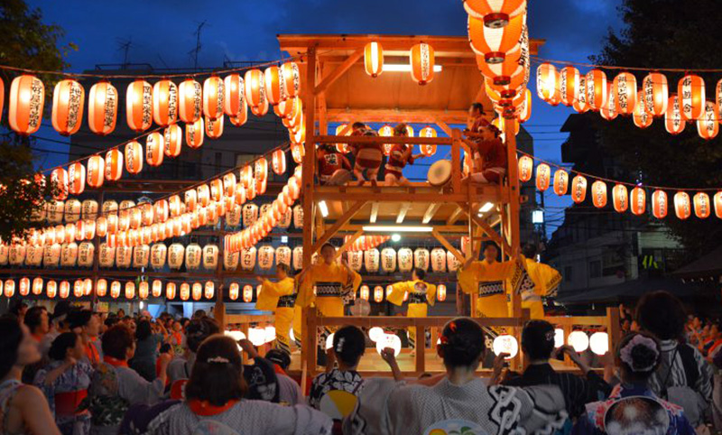

OBON FESTIVAL, JAPAN
WHAT IS THE OBON FESTIVAL AND WHAT DOES IT
CELEBRATE?
About OBON FESTIVAL
About O bon
Obon (お盆) or just Bon (盆) is a Japanese Buddhist custom to honor the spirits of one's ancestors. This Buddhist–Confucian custom has evolved into a family reunion holiday during which people return to ancestral family places and visit and clean their ancestors' graves when the spirits of ancestors are supposed to revisit the household altars. It has been celebrated in Japan for more than 500 years and traditionally includes a dance, known as Bon Odori. The festival of Obon lasts for three days; however, its starting date varies within different regions of Japan.
When the lunar calendar was changed to the Gregorian calendar at the beginning of the Meiji era, the localities in Japan responded differently, which resulted in three different times of Obon. Shichigatsu Bon (Bon in July) is based on the solar calendar and is celebrated around the 15th of July in eastern Japan (Kantō region such as Tokyo, Yokohama and the Tōhoku region), coinciding with Chūgen. Hachigatsu Bon (Bon in August), based on the lunar calendar, is celebrated around the 15th of August and is the most commonly celebrated time. Kyū Bon (Old Bon) is celebrated on the 15th day of the ninth month of the lunar calendar, and so differs each year, which appears between August 8 and September 7.
One exception was in 2008 and 2019, when the solar and lunar calendar matched so Hachigatsu Bon and Kyū Bon were celebrated on the same day. Kyū Bon is celebrated in areas such as the northern part of the Kantō region, Chūgoku region, Shikoku, and Okinawa Prefecture. These three festival days are not listed as public holidays, but it is customary for people to be given leave.
What is Obon ?
Obon is a summer event during which people welcome the spirits of their ancestors back home. Often held on and around July 15 of the old lunar calendar, Obon is now generally observed during the four days between August 13 and 16. Obon is considered Japan’s most significant occasion next to New Year’s, and most companies close down operations during this period. Although Obon is observed nationwide, the customs followed and the manner in which it is celebrated can vary considerably depending on the region. Some people light a “welcoming fire” at their front doors to greet their ancestors and a “send-off fire” to see them out. Others float lanterns down rivers, and still others insert disposable chopsticks or matchsticks into eggplants or cucumbers to create cow- or horse-shaped figures for the spirits of their ancestors to ride home from the spirit world and back again. In many regions, young and old, men and women gather at temples and shrines wearing yukata (casual kimono) to perform Obon dances, or Bon Odori.
WHAT IS THE OBON FESTIVAL AND WHAT DOES IT CELEBRATE ?
THE HISTORY AND TRADITIONS OF THE BUDDHIST OBON FESTIVAL
The Obon Festival season is with us once more! Urabon, shortened as Obon is a Japanese term translated from the Sanskrit word ‘Ullambana’ which actually means ‘to hang upside down’. It is used to imply the excruciating suffering, be it physical or spiritual, when one is hung upside down. The festival is considered an Invitation to the Dead because it is believed to be the time the spirits revisit our world. Even though such dark imagery is associated with its name and meaning, the Obon festival is actually a fun tradition celebrated with large gatherings, family reunions, and bright lanterns.
Obon is among the most important Buddhist rites celebrated in Japan, a number of other Asian countries and other parts of the world. Nationwide, travel increases during the months of July and August as multitudes of Japanese go home for the Obon Festival.
The festival has spread to other countries mainly through Japanese immigration, with the first American Obon Festival being observed in Hawaii in 1910. It was celebrated in the continental United States in 1931 at the San Francisco’s Buddhist Church, the oldest Buddhist temple establishment in the U.S. Since its outset in the U.S., Obon Festival has remained one of the most important Japanese-American traditions of folk culture. Today, there are large Obon Festivals held in numerous locations of the United States, Canada and South America as well as parts of Asia. A wide variety of traditions are observed during the Obon Festival. The time and traditions can vary, not just because it is celebrated in many different countries. Even within Japan itself, the easterners observe it in July while the westerners do it in August, still some Japanese Buddhists observe it on the 15th day of the seventh month on the lunar calendar, a date which is different altogether.
In spite of all these variations most Japanese follow some similar traditions including engaging in an elaborate Bon Odori dance, cleaning the ancestor’s graves, laying flowers on graves, meeting with family and revisiting hometowns. The light cotton kimonos adorned by observers are meant to reflect the summer heat. After a welcome of Obon, the first day of the festival, the disciples lure the ancestors’ spirits into their homes through paper lanterns. Some give a food offering to the spirits believed to revisit earth during this special festival. On the last day of the festival, the devotees bid the spirits a farewell by placing lanterns filled with candles into rivers, an act meant to guide the spirits as they return to the world of dead. Obon Festival normally lasts for three days.